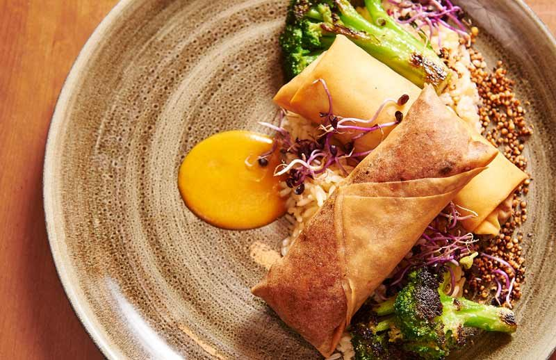

Münzkirchen · Bezirk Schärding
Da fühl i mi wohl.
Essen und trinken im Sauwald: g’schmackige Innviertler Kost, ein Schanigarten für den Sommer, Räume für Feste bis 450 Gäste – und acht ruhige Zimmer, falls es später wird.
Standard-, Tages-, Mittags- und Pizzakarte
Wösner Tenne bis 450 Personen
8 Komfortzimmer mit Balkon
Erdstollen-Führungen im Haus
Willkommen
Vier gute Gründe, bei uns einzukehren
Wir wechseln regelmäßig unsere Karte und kochen saisonale Spezialitäten, bieten sehr große Räumlichkeiten für Hochzeiten, Feste und Weihnachtsfeiern – und haben auch Möglichkeiten zum Übernachten.


Unsere Küche
„Wir verwöhnen Sie mit g’schmackiger Innviertler Kost“
… typisch österreichischen Speisen und g’sunden Schmankerln, die mit saisonalen Schwerpunkten täglich frisch für Sie zubereitet werden.
— Alex Wösner
Wir erneuern wöchentlich unsere Speise- und Getränkekarte. Hausgemachte Säfte, saisonale, gesunde und deftige Gerichte und Themenwochen lassen keine Wünsche offen. Ob deftig oder leicht, vegetarisch und vegan, Fisch oder Fleisch – bei uns ist für jeden das Richtige dabei.
Auf einen Blick
Unsere vier Karten
- Standardkarte – Suppen, Salate, Schnitzel, Jause, Süßes
- Tageskarte – saisonale Vor-, Haupt- und Nachspeisen
- Mittagskarte – Mi–Fr 11:00–13:30 Uhr, Menü ab € 11,50
- Pizzakarte – Freitag & Samstag ab 17:00 Uhr
Partylocation
Platz für 30 bis 450 Gäste
Ob Familienfeier, Geburtstag, Taufe, Hochzeit, Klassentreffen, Firmenfeier oder ein Dinner for two – wir haben das richtige Ambiente für Ihre Feier.
450Wösner Tenneteilbar ab 60 Personen
130Restaurantteilbar ab 20 Personen
120Hopfengartlteilweise überdacht
68Gaststube & Kaminstüberldas Herz des Hauses
35Ratsherrenkellerfür kleine Runden
30Schanigartenim Sommer
Öffnungszeiten
Wann wir für Sie da sind
| Montag | Ruhetag |
|---|---|
| Dienstag | ab 18:00 Uhr |
| Mittwoch–Freitag | 09:00–13:30 Uhr und ab 16:30 Uhr |
| Samstag | ab 09:00 Uhr |
| Sonntag | 08:00–15:00 Uhr |
Reservierungen und Vorbestellungen gerne telefonisch unter 07716 7240 oder per Mail an info@woesner.at.
Küchenzeiten
Wann die Küche kocht
| Mittwoch–Freitag | 11:00–13:30 Uhr und 16:30–21:00 Uhr |
|---|---|
| Samstag | 11:00–21:00 Uhr |
| Sonntag | 08:00–14:00 Uhr |
| Mittagskarte | Mittwoch–Freitag 11:00–13:30 Uhr, solange der Vorrat reicht |
| Pizza | Freitag & Samstag ab 17:00 Uhr |
Gästestimmen
Ihre Meinung zum Gasthof Wösner ist uns wichtig
Rückmeldungen, die unsere Gäste auf der bestehenden Website hinterlassen haben.
„Hatten eine großartige Hochzeitsfeier mit 200 Gästen & dazu habt ihr einen riesengroßen Beitrag geleistet. Wir bedanken uns … für die tolle Bewirtung, den raschen, zuvorkommenden Service, das traumhafte Essen. Ihr seid top organisiert, … ihr habt definitiv Erfahrung & wisst, auf was es an solch einem besonderen Tag ankommt. Danke an das gesamte Team, ihr seid spitze!“
Lisa & Chris.„Essen war sehr gut, Bedienung schnell und äußerst nett.“
Margit S.„Bestes Wirtshaus, sehr zum empfehlen. Nettes Personal, gutes Essen.“
Lorenzo M.„Waren hier Heute am 1. Weihnachtsfeiertag 2019 mit der Familie essen. Die Speisen waren durchwegs sensationell lecker und auch perfekt angerichtet.“
Julia H.„Bestes Essen und bester Service!“
Lukas S.„Perfektes Essen und Top Service – waren total begeistert.“
Renate F.„Sehr schöner Gasthof, traumhaft gute ‚Sauwald Brettljause‘.“
Heinrich P.„Junges kreatives Team, gute Auswahl an Speisen, gutes Essen, hervorragende Atmosphäre, highly recommend.“
Engelbert H.„Preis-Leistungsverhältnis passt. Wirklich sehr gute Küche und angenehmes Ambiente.“
Irene W.
Übernachten
Klein aber fein
Unsere ruhigen acht Komfortzimmer mit Dusche, WC, Flat-TV und Balkon laden so richtig zum Erholen und Wohlfühlen ein. Machen Sie einen Ausflug ins Innviertel und überzeugen Sie sich selbst.
Durch unseren Schlüsseltresor ist die Anreise 24/7 möglich – weitere Infos gerne bei der Buchung.
Gutschein
Zeit verschenken
Ein Gutschein vom Wösner passt immer – für ein Essen, eine Feier oder eine Nacht im Haus.
Busgruppen
Reisegruppen willkommen
Parkplatz für zwei Reisebusse vor dem Haus, Räume von 30 bis 450 Personen und Speisenangebot zur Vorbestellung.
Erdstollen
Einstieg im Keller
Der jahrhundertealte Erdstall unter dem Gasthof – 25,3 m lang, Führungen nach Voranmeldung.